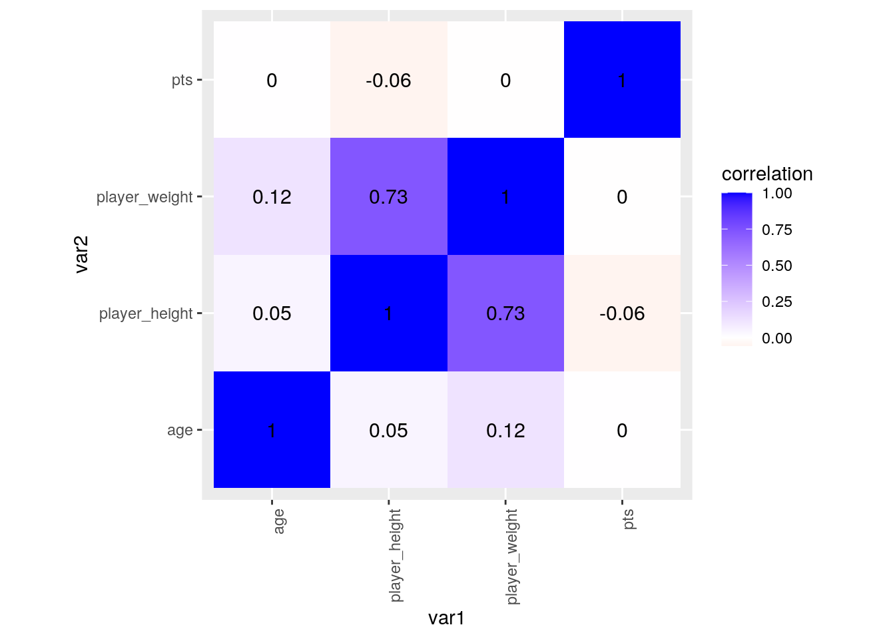
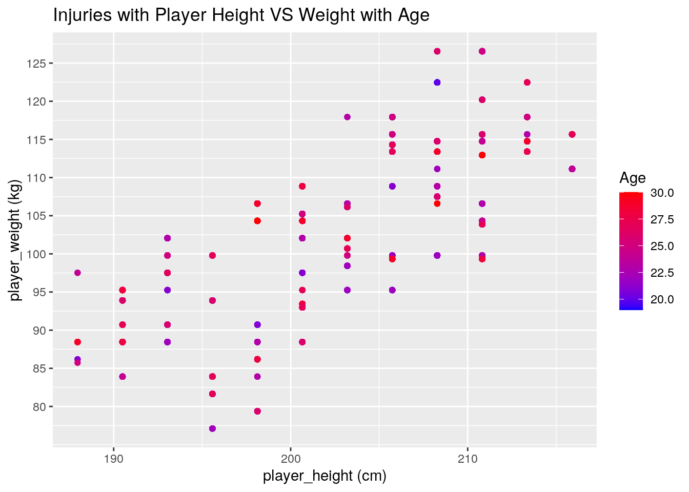
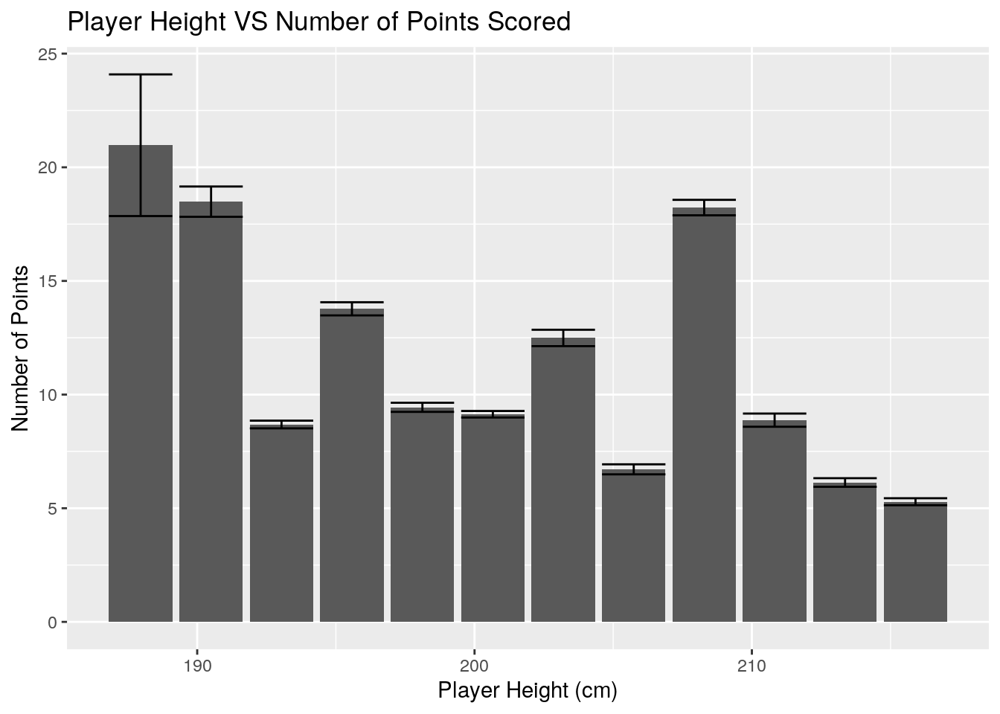
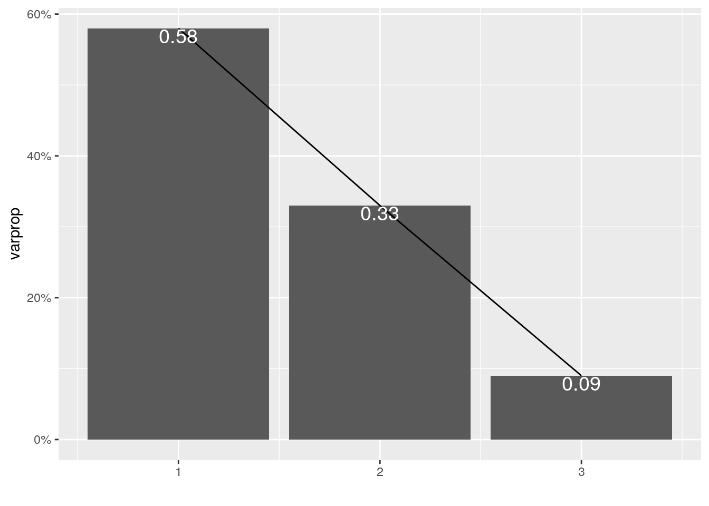
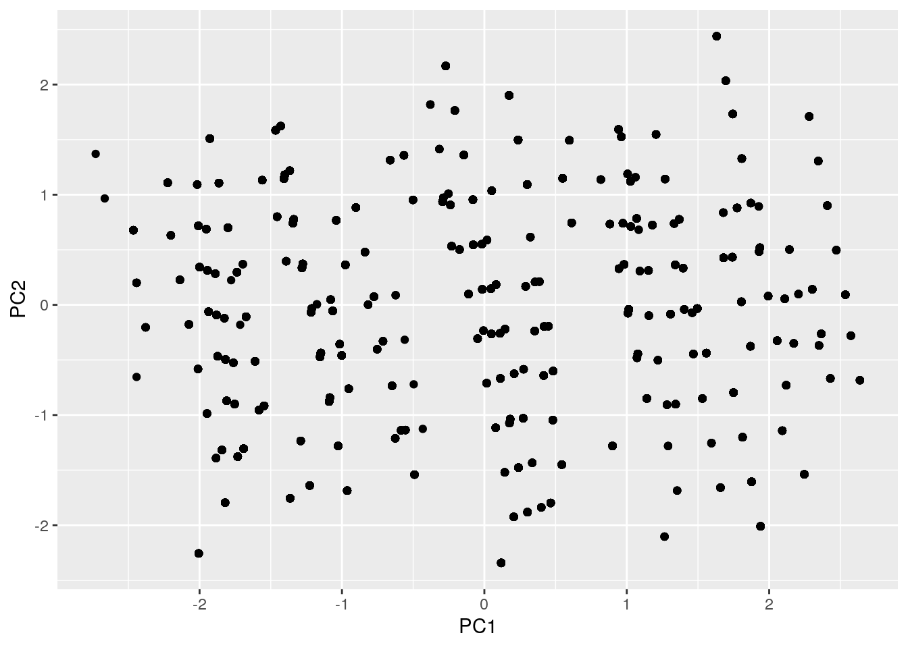

library(dplyr)
library(tidyr)
library(ggplot2)
all_seasons <- read.csv("~/all_seasons.csv")
all_seasons <- all_seasons %>% select(player_name, draft_year,
player_height, player_weight, age, pts) %>% filter(draft_year ==
"2012")
injuries <- read.csv("~/injuries_2010-2020.csv")
head(all_seasons)## player_name draft_year player_height player_weight age pts
## 1 Orlando Johnson 2012 195.58 99.79024 24 4.0
## 2 Tyler Zeller 2012 213.36 113.39800 23 7.9
## 3 Tyshawn Taylor 2012 190.50 83.91452 23 2.2
## 4 Will Barton 2012 195.58 77.11064 22 4.0
## 5 Marquis Teague 2012 187.96 86.18248 20 2.1
## 6 Maurice Harkless 2012 203.20 95.25432 20 8.2head(injuries)## Date Team Acquired Relinquished
## 1 2010-10-03 Bulls Carlos Boozer
## 2 2010-10-06 Pistons Jonas Jerebko
## 3 2010-10-06 Pistons Terrico White
## 4 2010-10-08 Blazers Jeff Ayres
## 5 2010-10-08 Nets Troy Murphy
## 6 2010-10-08 Pistons Jonas Jerebko
## Notes
## 1 fractured bone in right pinky finger (out indefinitely)
## 2 torn right Achilles tendon (out indefinitely)
## 3 broken fifth metatarsal in right foot (out indefinitely)
## 4 torn ACL in right knee (out indefinitely)
## 5 strained lower back (out indefinitely)
## 6 surgery to repair torn right Achilles tendonThe datasets all_seasons and injuries_2010-2020 were acquired from https://www.kaggle.com/datasets. The all_season dataset includes demographic variables and box score statistics of every NBA player from 1996 to 2019. Some variables include the player and the team they were on, their age, height, weight, and draft year and round. The box score statistics includes number of games played, rebounds, assists, average number of points per game, etc. The injuries_2010-2020 dataset includes all the injuries in the NBA from 2010 to 2020. The variables in the dataset include the date of the incident, player and their team name, and details about the injury. Growing up with an older brother who is heavily invested in basketball, I was definitely influenced by him and have also always been interested in basketball. After scrolling on Kaggle, I came across datasets about the NBA and thought it would be interesting to investigate if there is a correlation between a player’s demographics/statistics to their injuries. Based on what I have witnessed, I think that guarders or players to are shorter and weigh less (i.e equal or less than 6 ft or less than 81kg) would have the highest chance of injury than those who are taller or play as centers or forwards.
The datasets found were originally tidy, therefore no tidying was necessary. When calling the dataset, however the year was filtered to only 2012 to lower the observation numbers and relevant variables were selected from the dataset.
merging <- injuries %>% left_join(all_seasons, by = c(Relinquished = "player_name")) %>%
na.omitThe left_join function was used to merge the two datasets together through their common categorical variable, the player name. The numerical variables were player height, weight and age. Left_join was chosen to keep all the data in the injuries dataset as well as to only include the demographics/statistics of each associated player in injuries. After merging, the new merging dataset includes 4915 observations with 10 variables. There were no cases that were dropped.
library(tidyverse)
# mutate cm to
merging %>% mutate(player_heightfeet = player_height * 0.0328084) %>%
head()## Date Team Acquired Relinquished
## 1 2012-07-27 Hornets Austin Rivers
## 2 2012-07-27 Hornets Austin Rivers
## 3 2012-07-27 Hornets Austin Rivers
## 4 2012-07-27 Hornets Austin Rivers
## 5 2012-07-27 Hornets Austin Rivers
## 6 2012-07-27 Hornets Austin Rivers
## Notes draft_year
## 1 surgery on right ankle to remove bone spurs (out indefinitely) 2012
## 2 surgery on right ankle to remove bone spurs (out indefinitely) 2012
## 3 surgery on right ankle to remove bone spurs (out indefinitely) 2012
## 4 surgery on right ankle to remove bone spurs (out indefinitely) 2012
## 5 surgery on right ankle to remove bone spurs (out indefinitely) 2012
## 6 surgery on right ankle to remove bone spurs (out indefinitely) 2012
## player_height player_weight age pts player_heightfeet
## 1 193.04 90.7184 20 6.2 6.333334
## 2 193.04 90.7184 21 7.7 6.333334
## 3 193.04 90.7184 22 7.0 6.333334
## 4 193.04 90.7184 23 8.9 6.333334
## 5 193.04 90.7184 24 12.0 6.333334
## 6 193.04 90.7184 25 15.1 6.333334# group_by, summarize
merging %>% group_by(Relinquished) %>% summarise(mean(min(merging$player_height),
na.rm = T)) %>% head()## # A tibble: 6 x 2
## Relinquished `mean(min(merging$player_height), na.rm = T)`
## <fct> <dbl>
## 1 Andre Drummond 188.
## 2 Andrew Nicholson 188.
## 3 Anthony Davis 188.
## 4 Arnett Moultrie 188.
## 5 Austin Rivers 188.
## 6 Bernard James 188.# select
merging %>% select(Relinquished, player_weight, player_height,
age, pts) %>% head()## Relinquished player_weight player_height age pts
## 5023 Austin Rivers 90.7184 193.04 20 6.2
## 5024 Austin Rivers 90.7184 193.04 21 7.7
## 5025 Austin Rivers 90.7184 193.04 22 7.0
## 5026 Austin Rivers 90.7184 193.04 23 8.9
## 5027 Austin Rivers 90.7184 193.04 24 12.0
## 5028 Austin Rivers 90.7184 193.04 25 15.1# filter, arrange
merging %>% filter(Relinquished == "Damian Lillard") %>% arrange(player_weight) %>%
head()## Date Team Acquired Relinquished
## 1 2015-12-21 Blazers Damian Lillard
## 2 2015-12-21 Blazers Damian Lillard
## 3 2015-12-21 Blazers Damian Lillard
## 4 2015-12-21 Blazers Damian Lillard
## 5 2015-12-21 Blazers Damian Lillard
## 6 2015-12-21 Blazers Damian Lillard
## Notes draft_year player_height
## 1 placed on IL with sore left plantar fascia 2012 190.5
## 2 placed on IL with sore left plantar fascia 2012 190.5
## 3 placed on IL with sore left plantar fascia 2012 190.5
## 4 placed on IL with sore left plantar fascia 2012 190.5
## 5 placed on IL with sore left plantar fascia 2012 190.5
## 6 placed on IL with sore left plantar fascia 2012 190.5
## player_weight age pts
## 1 88.45044 22 19.0
## 2 88.45044 23 20.7
## 3 88.45044 24 21.0
## 4 88.45044 25 25.1
## 5 88.45044 26 27.0
## 6 88.45044 27 26.9Summary Statistics:
merging %>% group_by(Relinquished) %>% summarize_if(is.numeric,
mean, na.rm = T) %>% head()## # A tibble: 6 x 5
## Relinquished player_height player_weight age pts
## <fct> <dbl> <dbl> <dbl> <dbl>
## 1 Andre Drummond 210. 126. 22.5 14.4
## 2 Andrew Nicholson 206. 113. 25 5.58
## 3 Anthony Davis 209. 109. 23.4 24.0
## 4 Arnett Moultrie 208. 110. 22.5 3.35
## 5 Austin Rivers 193. 90.7 23.5 9.19
## 6 Bernard James 208. 108. 29 2.17merging %>% group_by(Relinquished) %>% summarize_if(is.numeric,
var, na.rm = T) %>% head()## # A tibble: 6 x 5
## Relinquished player_height player_weight age pts
## <fct> <dbl> <dbl> <dbl> <dbl>
## 1 Andre Drummond 1.53 3.16 5.31 8.29
## 2 Andrew Nicholson 0 0 2.05 3.29
## 3 Anthony Davis 0.707 52.6 4.49 20.5
## 4 Arnett Moultrie 0 1.54 0.3 0.147
## 5 Austin Rivers 0.709 0 5.27 7.60
## 6 Bernard James 0 1.25 0.727 0.875merging %>% group_by(Relinquished) %>% summarize_if(is.numeric,
sd, na.rm = T) %>% head()## # A tibble: 6 x 5
## Relinquished player_height player_weight age pts
## <fct> <dbl> <dbl> <dbl> <dbl>
## 1 Andre Drummond 1.24 1.78 2.30 2.88
## 2 Andrew Nicholson 0 0 1.43 1.81
## 3 Anthony Davis 0.841 7.25 2.12 4.53
## 4 Arnett Moultrie 0 1.24 0.548 0.383
## 5 Austin Rivers 0.842 0 2.30 2.76
## 6 Bernard James 0 1.12 0.853 0.935merging %>% group_by(Relinquished) %>% summarize_if(is.numeric,
min, na.rm = T) %>% head()## # A tibble: 6 x 5
## Relinquished player_height player_weight age pts
## <fct> <dbl> <dbl> <dbl> <dbl>
## 1 Andre Drummond 208. 122. 19 7.9
## 2 Andrew Nicholson 206. 113. 23 2.6
## 3 Anthony Davis 208. 99.8 20 13.5
## 4 Arnett Moultrie 208. 109. 22 3
## 5 Austin Rivers 190. 90.7 20 6.2
## 6 Bernard James 208. 107. 28 0.9merging %>% group_by(Relinquished) %>% summarize_if(is.numeric,
max, na.rm = T) %>% head()## # A tibble: 6 x 5
## Relinquished player_height player_weight age pts
## <fct> <dbl> <dbl> <dbl> <dbl>
## 1 Andre Drummond 211. 127. 26 17.5
## 2 Andrew Nicholson 206. 113. 27 7.8
## 3 Anthony Davis 211. 115. 26 28.1
## 4 Arnett Moultrie 208. 111. 23 3.7
## 5 Austin Rivers 193. 90.7 27 15.1
## 6 Bernard James 208. 109. 30 2.8First, the six core dplyr functions were used to manipulate and explore the dataset. I used mutate to convert the player height from centimeters to feet. I then used group_by and summarise to find the shortest player in 2012, and there were three at 6.1 feet which were Damian Lillard, Marquis Teague, and Darius Johnson-Odom. I used the select function to select for players, height, weight, and age. Lastly, since he was one of the shortest players in 2012, I filtered the players to Damian Lillard and arranged it to his weight to further analyze his statistics. Also, I added head() to save room when knitting. Summary statistics for each of my variables were computed using summarize_if and group_by along with unique functions mean, variation, standard deviation, minimum, and maximum. The mean weight and age were approximately 196 and 24, respectively. Something interesting I found was that there was a correlation between age and number of points scored where if they were near the mean age, the scored more points.
visualmatrix <- merging %>% na.omit() %>% select_if(is.numeric) %>%
cor()
visualmatrix## player_height player_weight age pts
## player_height 1.00000000 0.730433302 0.047910734 -0.056731883
## player_weight 0.73043330 1.000000000 0.117584523 -0.003474433
## age 0.04791073 0.117584523 1.000000000 0.003571202
## pts -0.05673188 -0.003474433 0.003571202 1.000000000# tidy
tidydata <- visualmatrix %>% as.data.frame %>% rownames_to_column("var1") %>%
pivot_longer(-1, names_to = "var2", values_to = "correlation")
tidydata %>% ggplot(aes(var1, var2, fill = correlation)) + geom_tile() +
scale_fill_gradient2(low = "red", mid = "white", high = "blue") +
geom_text(aes(label = round(correlation, 2)), color = "black",
size = 4) + theme(axis.text.x = element_text(angle = 90,
hjust = 1)) + coord_fixed() A correlation heat map of the matrix of the numeric variables, player height and weight and age, was generated. In this heat map, the darker the box, the higher the correlation, and vice versa. Player height and weight with age had little to no correlation. On the otherhand, player weight with player height had relatively high correlation.
ggplot(merging, aes(player_height, player_weight, color = age),
stat = "summary") + geom_point(size = 1.5) + scale_y_continuous("player_weight (kg)",
breaks = c(80, 85, 90, 95, 100, 105, 110, 115, 120, 125)) +
scale_color_gradient(low = "blue", high = "red") + labs(color = "Age") +
ggtitle("Injuries with Player Height VS Weight with Age") +
scale_x_continuous("player_height (cm)") A ggplot using stat = “summary” with additional tick marks was generated to visualize the plot of the players’ height, weight, and age. The x-axis represents the players’ height in centimeters, and the y-axis represents the players’ weight in kilograms. There is great variation in the data, however there is a visible upward,increasing trend with height and weight.
merging %>% ggplot(aes(x = player_height, y = pts)) + xlab("Player Height (cm)") +
ylab("Number of Points") + geom_bar(stat = "summary", fun.y = "mean") +
geom_errorbar(stat = "summary") + ggtitle("Player Height VS Number of Points Scored") Lastly, I generated a bar plot to further analyze the correlation between injuries with height. However, instead of using injuries as a variable, I decided to determine the correlation between the number of points that a player scores with their height. Error bars were included to indicate uncertainty in the data. According to my data, shorter players tend to score more points, which is quite accurate considering if you are short in the NBA, this would mean you are able to shoot and score more. This would then allow me to conclude that there is a possible correlation between players who score more and rates of injuries.
##Dimensionality Reduction
drdata <- merging %>% select_if(is.numeric) %>% na.omit %>% scale
drdata <- merging %>% select(player_height, player_weight, age) %>%
scale
drdata_pca <- princomp(drdata)
summary(drdata_pca, loadings = T)## Importance of components:
## Comp.1 Comp.2 Comp.3
## Standard deviation 1.3222734 0.9923813 0.51590892
## Proportion of Variance 0.5829209 0.3283404 0.08873873
## Cumulative Proportion 0.5829209 0.9112613 1.00000000
##
## Loadings:
## Comp.1 Comp.2 Comp.3
## player_height 0.695 0.157 0.702
## player_weight 0.702 -0.709
## age 0.155 -0.986eigenval <- drdata_pca$sdev^2
varprop = round(eigenval/sum(eigenval), 2)
ggplot() + geom_bar(aes(y = varprop, x = 1:3), stat = "identity") +
xlab("") + geom_path(aes(y = varprop, x = 1:3)) + geom_text(aes(x = 1:3,
y = varprop, label = round(varprop, 2)), vjust = 1, col = "white",
size = 5) + scale_y_continuous(breaks = seq(0, 0.6, 0.2),
labels = scales::percent) + scale_x_continuous(breaks = 1:3)
dataframe <- data.frame(PC1 = drdata_pca$scores[, 1], PC2 = drdata_pca$scores[,
2])
ggplot(dataframe, aes(PC1, PC2)) + geom_point() A principle component analysis was conducted for dimensionality reduction for variables height, weight, and age. This was done through normalizing the data, princomp, calculating eigen, and also plotting the data through ggplot. The cumulative proportion of variance for Comp 1 and Comp 2 values were greater than 80%, which is why they were used. After analyzing the data and graph, Comp 1 shows more variation than Comp 2. Furthermore, in Comp 1, injured players are those who are are tall, heavier and are younger. This conclusion disproved my hypothesis in that injured players would be those who were shorter and heavier.